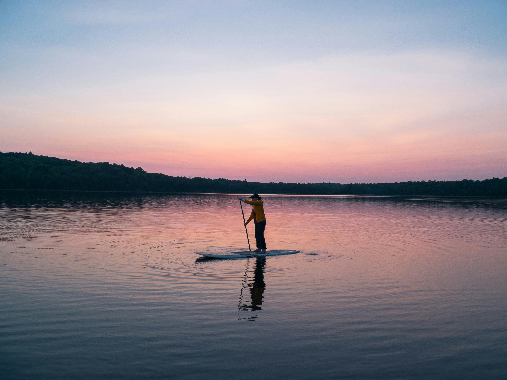

A glimpse into the Finger Lake region
Here in the Finger Lakes, you have the luxury of choice. Explore our wide-open spaces and changing seasons, shop at local boutiques, find your new favorite way to get on the water, immerse yourself in arts and culture, and find activities that create your lake retreat at any price point. Check out the things to do below to start planning your Finger Lakes getaway! (1)

Behind the Region
Geologists say, The Finger Lakes were formed more than 2 million years ago, during the Pleistocene Ice Age. Glaciers crept through the area and carved deep slices into the land, pushing the earth and rocks south. Gradually the ice melted and the glaciers receded, leaving shale valleys of water, which are now the Finger Lakes. (1)
Get in touch with nature
There are 11 gorgeous Finger Lakes. From west to east they are: Conesus, Hemlock, Canadice, Honeoye, Canandaigua, Keuka, Seneca, Cayuga, Owasco, Skaneateles, and Otisco. (1)
Upcoming Events
Group Water Biking

June 6, 2025
Sunrise Paddle boarding
June 15, 2025
Fishing Competition

June 22, 2025
Learn How to Sail

June 27, 2025
Activities to do
There are a multitude of recreational activities including water biking, kayaking, canoeing, paddle boarding, swimming, jet skiing, sailing, and fishing. There are many local shops to go to, resturants to eat from, and historical sites to explore. (1)

Adventure